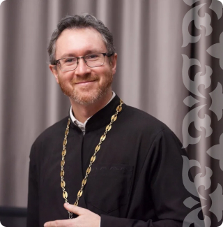
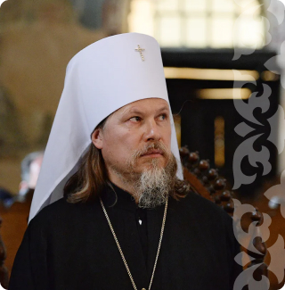
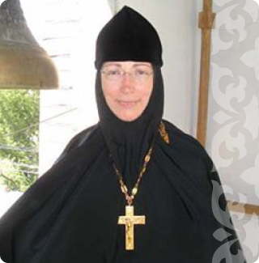
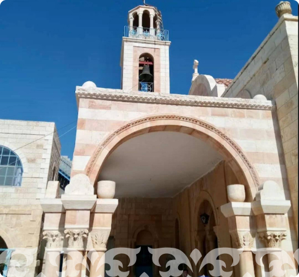
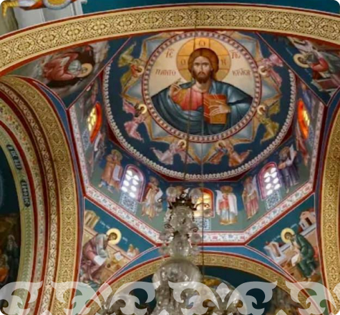
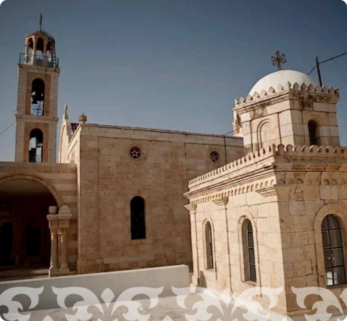
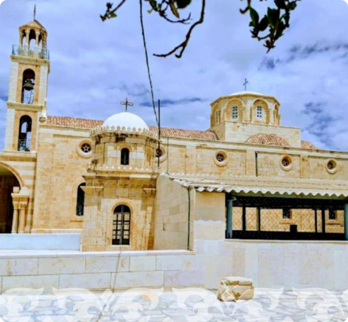

About Reverend Alexy
Saint Alexis was born in Rome into a family of pious
ungodly-loving Euthymian and Aglaida. The couple have been for a long time
childless and tirelessly prayed to the Lord for the gift of offspring. AND
The Lord consoled the couple with the birth of their son Alexy. At six years old
the lad began to study and successfully studied secular sciences, but especially
diligently read the Holy Scriptures. As a young man, he began
imitate their parents: strictly fasted, distributed alms and
under rich clothes he secretly wore a sackcloth. It ripened early
desire to leave the world and serve the One God. However, parents
were going to marry Alexy and, when he came of age,
found him a bride.
After the betrothal, left alone with his bride in the evening,
Alexy removed the ring from his finger, gave it to her and said: "Keep this,
and may the Lord be with us, by His grace arranging for us
new life." And he himself secretly left home and boarded a ship,
sailed to Mesopotamia.
Once in the city of Edessa, where the image of the Lord not made by hands was kept,
Alexy sold everything he had, distributed money to the poor and became
live at the Church of the Blessed Virgin Mary on the porch and feed
alms. The reverend ate only bread and water, and
He distributed the alms he received to the weak and the elderly. Each
On Sunday he received the Holy Mysteries.
Relatives searched everywhere for the missing Alexy, but to no avail. Servants,
sent by Euthymian to search, they also visited Edessa, but did not
recognized in the beggar, sitting on the porch, their master. From
strict fasting, his body dried up, beauty disappeared, vision became
weak. The blessed one recognized them and thanked the Lord for
received alms from his servants.
The body of the saint from whom the healings began was
placed in the middle of the square. All Rome gathered here. Emperor and
The Pope themselves brought the body of the saint into the church where it was
for a whole week, and then was laid in a marble tomb. From
holy relics began to flow fragrant myrrh, giving
healing for the sick.
The honest remains of St. Alexis, the man of God, are buried in
Church of Saint Boniface. In 1216 relics were found.
The life of the holy Reverend Alexis, a man of God, has always been
one of the favorites in Rus'.
Diocese

Andrey Stenyaev
Priest of the Russian Orthodox Church

Maxim Pervozvansky
Archpriest of the Russian Orthodox Church

Igumeniya Maria
Mother Superior of the Kazan Icon of the Mother of God
Monastery gallery



